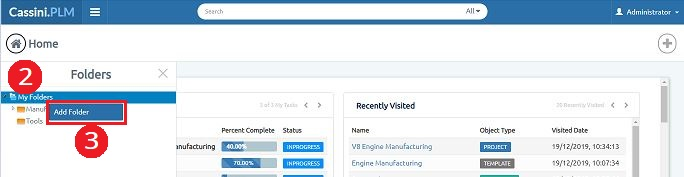

A structural way of organising your folders in application, as users add folders overtime, there may be hundreds of folders will be created. With the help of this system, users can maintain a hierarchy and save folders either on the same level or at sub level as many as they want and can view anytime, anywhere.
Folder creation is useful for manufactures to create and save folders at different levels and upload different types of files into each folder. User can save time in finding the files and can easily access files just in few clicks.
1. Click on "Folders" from navigation bar once logged in
2. Select My Folder and click on RMB (Right Mouse Button)
3. Click on Add Folder

4. Enter the Folder Name
5. Click on Enter button
Folder will be created successfully.